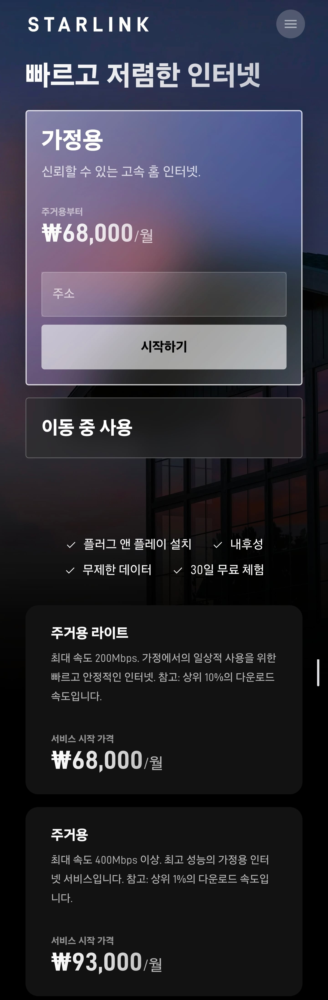

30일무료체험까지있음 ㄷㄷ

30일무료체험까지있음 ㄷㄷ
저거 광랜이야?
우리동네는 재개발지역이라 광랜못들어온다고 100mb쓰는데 ...
위성임
위성으로 공유기에다가 레이져 쏴서 작동됨
가격괜찮네
Adsl 시절에 천리안에서 야짤 한두개받고 스타배틀넷 한두판하면 십몇만원씩 나왔는데
쓸만한데?
생각보다 저렴하긴한데 어지간하면 우리나라에 데이터 안터지는곳이 없긴해서
한국에서는 산속 사찰이나 섬에 사는 사람이나 쓰지 필요없음 땅이 작아서...
우리나라에서는 배타는 사랑정도나 저거 필요할듯 ...
일렉트로마트가면 광고있던데
선박 종사자들 개꿀이긴하겠네 낚시 아재들이랑ㅋㅋㅋ
저거 없던시절은 청해부대 가족 영상통화 한번해주려면 얼마가 힘들었는지
제대로 된 커넥티드 카를 위한 장비구만
우리나라에서는 lte 다 터지니 다르겠지만 ㅎㅎ
많이 내린거같네 배타면 개꿀일듯 근데 한국 육상에서는 오지 사는거 아니면 굳이
그래서 요새 배타는 분들 쉴때 인터넷 된다고 선박승무원 개꿀이라고 한게 아니구만
저걸 오지 어디서든 쓸 수 있다는거지?
스마트폰이나 노트북에서 바로 와이파이 연결하듯 바로 인터넷되는줄 알았는데
무슨 안테나 설치하고 그래야되더만
해외 캠핑족들 좋겠는데
여담이지만 아시아나 제주 노선에 스타링크 되던데 개꿀이었음